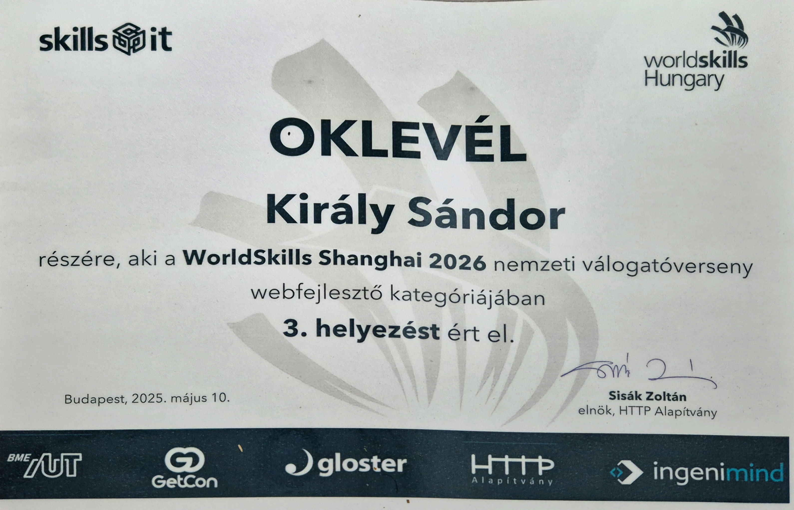
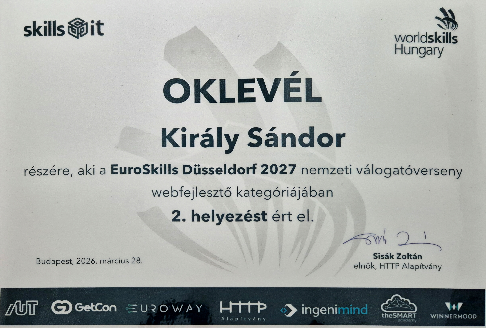

Improvise, Adapt, Overcome,
I deliver solutions fast,

About me
I'm naturally curious when it comes to technology. I love trying out new stacks and figuring out what makes them tick.
I've been coding since I was 13, spending most of my time in the Node.js ecosystem before expanding into Go. Over the past two years, I've accelerated my growth by picking up React, moving to TypeScript for better code clarity, and actively ditching bad coding habits to build cleaner software.
As I kept leveling up, I put my skills to the test in national competitions. I placed 3rd in the Hungarian qualifiers for WorldSkills 2026, and returned the following year to take 2nd place in the EuroSkills 2027 national qualifiers, ranking among the top young developers in the country both times.
Right now, I maintain three active projects (two getting new features, one in maintenance). Beyond those, I've written countless scripts and side apps just for the love of the game, many of which grew into fully polished, usable software.

Tech Stack
Technologies and tools I build with daily or currently explore.
- Current Core: Node.js, React, TypeScript
- Currently Exploring: Go, Microservices, Native Desktop Dev (Fyne), System Design
- Tools & Infrastructure: Git, Linux, REST APIs, Docker
- Databases: MySQL, MariaDB
Projects
My latest and greatest projects
Pigon Micro
A self-hosted, end-to-end encrypted chat application rebuilt from the ground up.
It supports text, image, and video messaging alongside peer-to-peer calling via WebRTC.
Under the hood, it uses AES-GCM for encryption and ECDH for secure key exchange.
Currently running on a Web UI, with a native desktop app (written in Go / Fyne) actively in
development.
Repository: github.com/kiralysanyi/pigon-micro
Vchat-Neo
A lightweight, self-hosted video conferencing web app built as a complete rewrite of an earlier
project.
Leverages Mediasoup to handle media routing efficiently on the server side, keeping client
resource usage minimal even in calls with 20+ active participants.
Repository: github.com/kiralysanyi/vchat-neo
Simple Screenshare
Does exactly what the name implies: zero-bloat local screen sharing.
Originally built back in school to solve a real classroom issue: students couldn't see the
physical whiteboard clearly, and bad internet bandwidth made Google Meet lag out. I built a
local alternative using Mediasoup, which served as my hands-on lesson in why pure P2P WebRTC
doesn't scale well to 30+ local clients. (According to my latest info, it's still in use.)
Repository: github.com/kiralysanyi/simple-screenshare

Competitions
The high-pressure challenges that accelerated my development over the last 2 years.
WorldSkills 2026 Hungarian National Qualifiers
Competing in the Web Technologies category, this was my entry point into competitive
development. During my final year of school, my teacher encouraged me to enter and I decided to
give it a shot.
Preparing for round one became my primary motivation to transition from plain JS to mastering
React and CSS. Round two was pure endurance: traveling 3.5 hours to Budapest on 3 hours of sleep
for an intense 8-hour live coding marathon. Out of the nationwide applicants, I placed in the
top 3 of the 8 finalists chosen for this round.
The final stage was a multi-day pressure test involving complex frontend and backend modules
under live observation by judges, spectators, and photographers. I finished 3rd place overall
nationally, a huge milestone that built my confidence in writing production code under
tight deadlines.
EuroSkills 2027 Hungarian National Qualifiers
My second run at the national qualifiers in the Web Technologies category. Coming back with a full year of building real applications made a huge difference. Facing a fresh set of timed API and UI architecture challenges, I demonstrated clear growth and secured 2nd place overall in Hungary.
Certifications & Recognition
3rd Place – WorldSkills 2026 National Qualifier
Category: Web Technologies
Issuer: SkillsHungary / SkillsIT (MKIK)
National recognition awarded for placing 3rd overall in the Hungarian qualifiers for WorldSkills Shanghai 2026.

2nd Place – EuroSkills 2027 National Qualifier
Category: Web Technologies
Issuer: SkillsHungary / SkillsIT (MKIK)
National recognition awarded for taking 2nd place overall in the Hungarian qualifiers for EuroSkills Düsseldorf 2027 at the Szakma Sztár Festival.

Get In Touch
Interested in working together or checking out my open-source work?
I'm always open to discussing new opportunities, side projects, or backend/fullstack developer roles.
- Email: kiralysandor1986@gmail.com
- GitHub: github.com/kiralysanyi